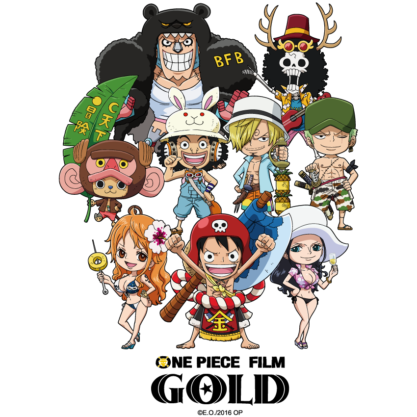

Sobre
Os Piratas do Chapéu de Palha, também conhecidos como a Tripulação do Chapéu de Palha ou simplesmente Chapéus de Palha, são uma tripulação pirata ascendente e infame que se originou do East Blue, mas que possui vários membros de locais diferentes. Eles são o principal foco e protagonistas do mangá e anime One Piece, e são liderados pelos protagonistas principais, Monkey D. Luffy. Os "Chapéus de Palha" foram nomeados assim devido a assinatura de Luffy, seu chapéu, que foi dado a ele por Shanks, o Ruivo.
Eles foram referidos assim pela primeira vez por Smoker em Alabasta. A tripulação navegou no Going Merry, o primeiro navio oficial dos Chapéus de Palha, até o Arco Water 7. Durante o Arco Pós-Enies Lobby, Franky e Iceburg construíram um novo navio que foi chamado de Thousand Sunny por Iceberg, embora os membros lutassem por nomes diferentes. Os Chapéus de Palha atualmente consistem em dez membros cujas recompensas combinadas são iguais a 8.815.001.000 bellys.
